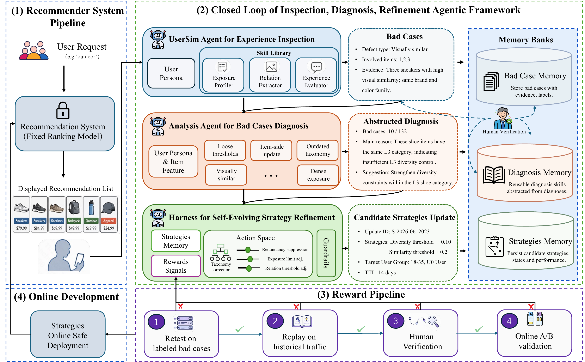
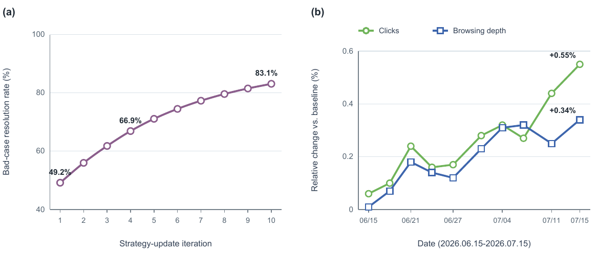

上下文坏例
将用户对重复、同质或疲劳的感受转成带证据的结构化事件。
SR-Agent: An Experience-Driven Agentic Framework for Post-Ranking Strategy Refinement in E-Commerce RecommendationHanchen Yang、Kaiwen Yang、Junpeng Zhuang、Yang He、Keting Cen、Bochao Liu、Zhongbo Sun、An Liu、Zhongteng Han、Chenyi Lei · Kuaishou · 2026-07-21
SR-Agent 用于持续维护电商推荐的后排序规则。系统先从有问题的推荐页面中找出原因，再从一组预先批准的动作中提出修改、验证效果并上线。生产安全主要来自“只允许改有限的内容”。
SR-Agent 研究的是一个经常被推荐模型论文忽略的运维层：最终列表里的类目、店铺、价格带、相似度与曝光规则，怎样在商品和用户状态持续变化时被发现、诊断并安全修正。 以下从问题成因、既有方法缺口与论文假设三个层面界定研究问题。
与相邻工作相比，SR-Agent 不是更通用，而是更窄。它用表达能力换来了可审计性和生产安全。
UserSim 与 Analysis Agent 被刻意分开：前者回答“有没有体验缺陷”，后者回答“当前策略为什么没拦住、最小应该改哪里”。 以下按总体流程、关键机制与实现约束说明技术路线。

UserSim 与 Analysis Agent 可以做语义判断和跨案例归纳；真正影响线上展示的 Harness 只能从预定义动作空间选参数，并依次通过坏例重测、历史流量重放、人工审核与线上 A/B。
阅读要点：系统安全并非来自 LLM 足够谨慎，而是来自“模型不能改代码、不能越权扩展动作、不能绕过验证”。自进化发生在记忆引导的提案选择，不发生在安全边界本身。
去掉模块名后，本质是一条从不可直接执行的主观信号，到可审计控制变量的编译链。每一步都降低自由度，也丢失一部分问题覆盖。
将用户对重复、同质或疲劳的感受转成带证据的结构化事件。
聚类多例，归因到信号、分组、阈值、曝光或上下文容忍度。
只在授权范围内改阈值、抑制强度、曝光上限或类目映射。
论文最成熟的工程判断，是不用一个自由 Agent 直接写生产策略，而用 Harness 把它限制在四类带步长、范围和白名单的动作里。
系统只允许四类受控修改：调整关系阈值、改变冗余抑制强度、限制曝光，以及修正类目。每类动作都有固定步长、范围和白名单。大模型不能直接生成线上代码、修改模型目标、访问未授权范围或创造新操作。
每次诊断后，系统先从策略记忆中查找相似案例，再生成少量候选。固定校验器会检查字段、参数范围、作用域和版本；冲突修改与类目操作必须交给负责人审核。安全边界始终固定，系统只学习“遇到哪类问题时优先提出哪种候选”。
| 动作 | 参数 | 允许域 | 解决的失配 |
|---|---|---|---|
| 关系阈值调整 | 关系 r；Δτ | visual / semantic / substitute；±0.15，步长 0.01 | 相似或替代关系识别过松/过严 |
| 冗余抑制调整 | 授权组 g；Δλ | ±0.50，步长 0.05 | 关系识别正确但抑制力度不合适 |
| 曝光限制调整 | 维度 d；时间窗 h；上限 k | 类目 / 店铺 / 价格带；预配置组合 | 会话或列表内过度集中 |
| 类目纠正 | 操作 o；节点 n；目标组 g | merge / split / reassign；授权映射 | 功能等价商品被错误分组 |
来源：论文 Table 1。范围与白名单由策略 Owner 预先配置并版本化，不由 LLM 自行扩展。
候选随后通过四阶段 Reward Pipeline：先在诊断匹配的已标注坏例上重测，再在更大历史流量上回放以检查覆盖与副作用，之后由策略 Owner 审核，最后进入受控线上 A/B。任一早期阶段失败都会终止；线上护栏违规则回滚。最终 reward 是四元组，不被压成一个可相互抵消的标量。
最强证据来自一个月线上 A/B：控制组保留人工配置策略，实验组冻结基础 Ranker，仅允许 SR-Agent 调整受限后排序策略。体验与订单指标均为正向。 以下先说明评测设置，再结合主结果、消融与边界判断证据强度。
实验使用 2.5% 流量，覆盖约 6,000 万用户和 7,000 万商品。论文报告点击类目数、浏览深度、点击数、订单量与 GMV 全部提升，说明系统并非用多样性换掉商业价值。由于论文没有给出置信区间、显著性阈值或逐指标方差，页面只将这些数字视为“论文报告的线上相对变化”，不额外推断统计强度。
| 指标组 | 指标 | 相对变化 |
|---|---|---|
| 用户体验 | 人均点击类目数（1 日） | +0.425% |
| 用户体验 | 人均点击类目数（7 日） | +0.482% |
| 用户体验 | 浏览深度 | +0.342% |
| 用户体验 | 点击数 | +0.554% |
| 订单 | 订单量 | +0.707% |
| 订单 | GMV | +0.461% |
来源：论文 Table 2；数值为相对控制组变化。基础排序模型保持不变。
坏例检测在 500 个生产页面上评估。人工检查找到 36 个坏例；不带用户意图的 UserSim 标记 114 个，验证率 91%；加入用户意图后标记 142 个，验证率 95%。这支持自动检查具有更高候选覆盖并保持较高审核通过率，但表中“人工 36 个”不是明确声明的穷尽真值集，因此无法从这些数字计算 Recall，也不能证明 Agent 找到的额外坏例覆盖了人工遗漏的全部真实缺陷。
| 方法 | 标记案例 | 验证率 | 可支持的结论 |
|---|---|---|---|
| 人工检查 | 36 | 100% | 传统流程基线；并非明确穷尽标注 |
| UserSim 无用户意图 | 114 | 91% | 高吞吐，少量误报 |
| UserSim 有用户意图 | 142 | 95% | 意图上下文提升审核通过率与候选数量 |
来源：论文 Table 3。“验证率”更接近抽查后的 precision-like 指标；论文未提供统一穷尽 ground truth 下的 recall。
运营效率提升明显，但仍保留人工审核。检查 500 个案例从 7 天缩短到 50 分钟自动处理加 1 个审核人日；分析 500 个坏例从 2 天缩短到 90 分钟自动处理加 1 个审核人日；策略更新从 2 周缩短到 3 小时自动处理加 1 个审核人日。
端到端周期因此从 2–3 周降到 3–5 个自然日。一轮使用 Claude Sonnet 4.6，所有调用合计约 3,600 万 Token。系统仍随机抽检约 1% 的坏例和诊断，并在上线前审核候选策略。

十次单策略更新中，坏例解决率由 49.2% 升至 83.1%；一个月内点击与浏览深度虽有波动，期末分别约 +0.55% 与 +0.34%。
谨慎解读：两条趋势同时上升与机制叙事一致，但十次更新按时间顺序累积，缺少随机顺序或单更新隔离，因此不能从相关趋势判断每一轮提升都由记忆驱动的“自进化”造成。
SR-Agent 的优势与限制来自同一个选择：冻结 Ranker、固定动作 schema、保留人工审核。它证明了窄域自进化可安全落地，没有证明通用 Agent 可以自主重写推荐系统。 以下区分概念贡献、方法价值、主要局限与后续验证方向。
最强反事实：在相同动作空间、四阶段验证、候选数和 Token 预算下，比较人工规则检索、无记忆 LLM、仅成功记忆、成功与失败双记忆，以及完整 SR-Agent。检测检验：另建穷尽标注的坏例集，按缺陷类型报告 precision、recall、校准度和审核一致性。
演化与成本：对新一批诊断随机屏蔽 Strategy Memory，比较候选通过率、回归率与线上效果，直接测量历史奖励的增量；同时把 Token、图像处理、回放、人工审核、线上流量和回滚统一折算到每个成功策略及长期业务收益。
来源与口径：基于 arXiv:2607.17719v2（2026-07-21）论文 PDF 与官方源文件整理；数值均来自论文表格和图。本文未独立复现快手线上实验；关于检测口径、组件归因和生命周期成本的内容为证据约束下的编辑性推断。
↑ 返回顶部